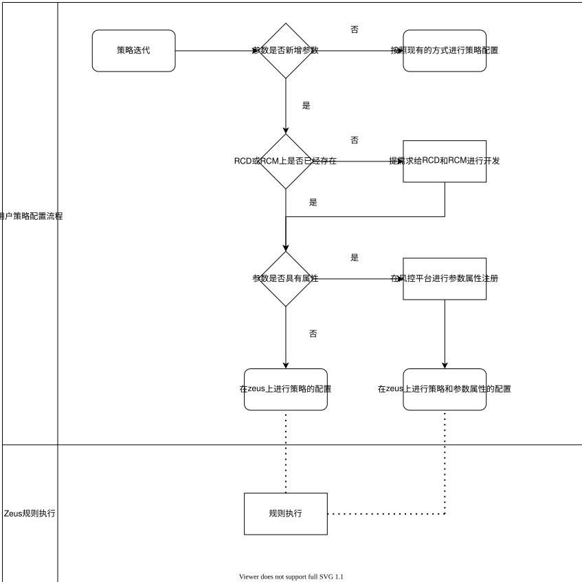

说明：RCData和RCModel与Zeus互通使用说明文档
一、背景
1）现有的路由场景执行过程中存在着数据中断，策略PM无法配置真实的决策流。实际配置上，一个真实的决策流被配置成为了多个分支，由审批系统串起来整个决策流。在实际执行过程中，单个分值执行完毕后跳离zeus到审批系统，审批系统从rcdata获取下一个flownum执行时需要的数据，再次触发zeus进行规则执行。遇到三方数据需要等待的时，审批系统挂起等待数据结果返回，在数据返回后重新调用zeus。在以上的数据和系统交互方式下，策略PM在策略配置过程中存在以下痛点：
【变量上线前置工作多】：一个新变量上线>>宙斯中使用，至少要经过 8个步骤，最多要经过 11个步骤，详情ZEUS-现有问题梳理。目前总计4000个变量，使用这么多变量需要至少操作 3.2万次。
【安全隐患多】：在策略迭代过程中，路由场景分支优化，上线文配置，变量新增等环节，每个步骤都涉及到需求沟通和同步开发的工作，都会影响到线上变量计算，造成计算异常。
【策略体系维护成本高】：无法配置真实的决策流，真实的决策流必须转化为符合zeus执行逻辑的图在进行部署，后续策略迭代人力成本高。
2）【计算冗余】：审批系统负责业务流程的调度和前置数据的获取，在参数准备时，根据flownum中的场景对应的dataport，将dataport中的全部参数获取并传递给zeus，这类前置入参的方式导致计算冗余。
二、名词解释
三、操作指南
1.用户操作流程说明

2.Quick Start
1、如何新增参数属性
@胡卓亦补充下小视频
2、新增参数如何设置和查看属性设置
3.详细操作流程说明
Step1:提参数需求给RCData和RCModel
Step2: 将参数配置成规则并在场景中生效
Step3: 流量命中规则，规则按需取数进行执行并返回决策
Step4: 如果参数有属性设置，新增两步1）在风险运营门户新增参数属性设置；2）在zeus路由场景节点配置参数属性
Step5:
四、FAQ
Q1：何时进行参数属性的设置？
--当规则中使用的参数具有时效性，版本等影响到参数取值的维度时，需要进行参数属性的设置。
Q2：在哪儿进行参数属性的设置？
--打开路由场景的场景配置节点，即可进行参数属性的设置